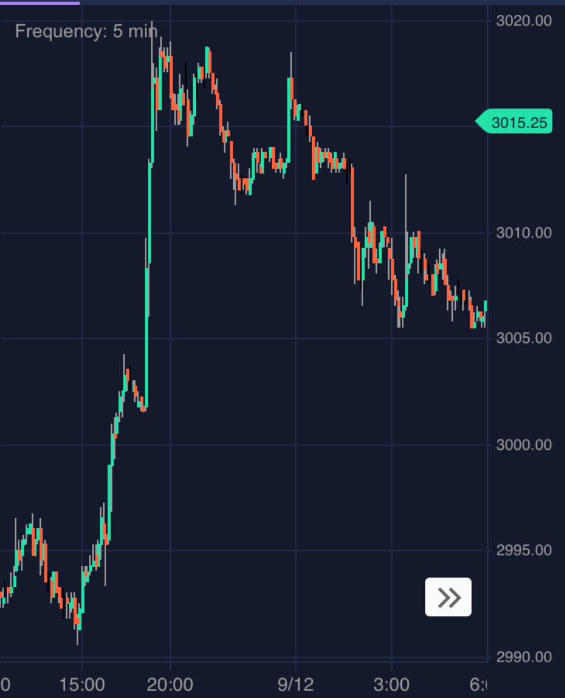
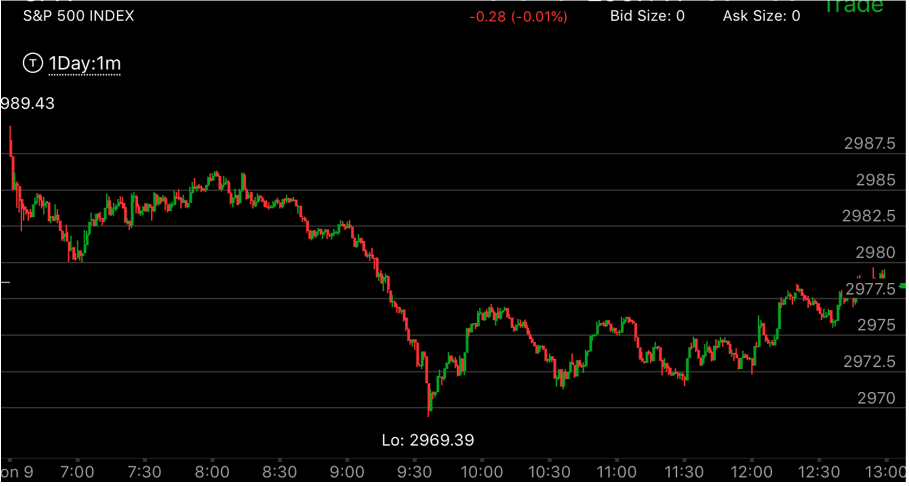

强大的第一浪后，只发生了一次加速，会开始填补真空
- 如果是强大的一浪后，再次加速，然后走平，那么会填补真空，但是趋势仍然是第一浪的趋势
- 一定要创新低/新高的时候加速，才会填补真空。
- 如果盘前走势，出现了填补真空的第一浪，开盘后，第一浪的真空有时就不再填补，这样不要以为它一定会填补这个真空而反向操作。关键是加速的情况。
- 如果盘前走势，出现了第一次加速的走势，没有第二次加速，那么开盘后，它的趋势仍然是第一浪的趋势。但是有时候，第二次加速不好区分。是否第一浪也不好区分。



图示：收盘后，出现了一个很大的大浪。这个就是第一浪。这个其实有些困难的地方。因为在收盘前，它大涨，如果两个结合起来看，似乎这个浪是第二浪。但是其实不是如此。
因为这个发生在收盘后，而且幅度大的多。可见是有新的新闻导致的。所以这个是第一浪。19：40的时候，它回调，出现了一个加速走势。幅度不大。但是没有了第二次加速。这个说明它仍然在升势，但是需要填补真空了。
它在盘后大跌。填补真空。第二天开盘后，冲高，走低。勉强出现了两段走势。6：40是第一段。6：50是第二段结束。结合盘前走势。可以看到它3002是真空点。所以这个两段走势虽然看起来不是一个正常的两段走势。
因为它第一段速度快，第二段勉强超过第一段幅度。但是也反转了。然后大涨。这时大盘仍然处于升势。大盘仍然处于升势，但是一天之内都在震荡。可以逢低做多。

图示：开盘后，出现了强大的第一浪。它继续走低，7：00出现了加速，然后反弹。要看到这个反弹只有一次。而幅度显然不对。这样大盘仍然处于跌势。反弹只会填补部分真空。
它在反弹很久后，大跌。

图示:开盘后出现了强大的第一浪，然后反弹，再次加速下跌，创新低，立刻反弹。开始了填补真空。10：20它再次创新低，加速下跌，这次再次形成了加速走势。开始反弹，
但是它的幅度无法和开盘第一浪相比。所以无法填补反转，只是填补真空。11：10联邦宣布利率后，它出现了两段下跌走势。这时，它的第二段下跌速度超过了开盘的第一浪，这样造成了全面反转。